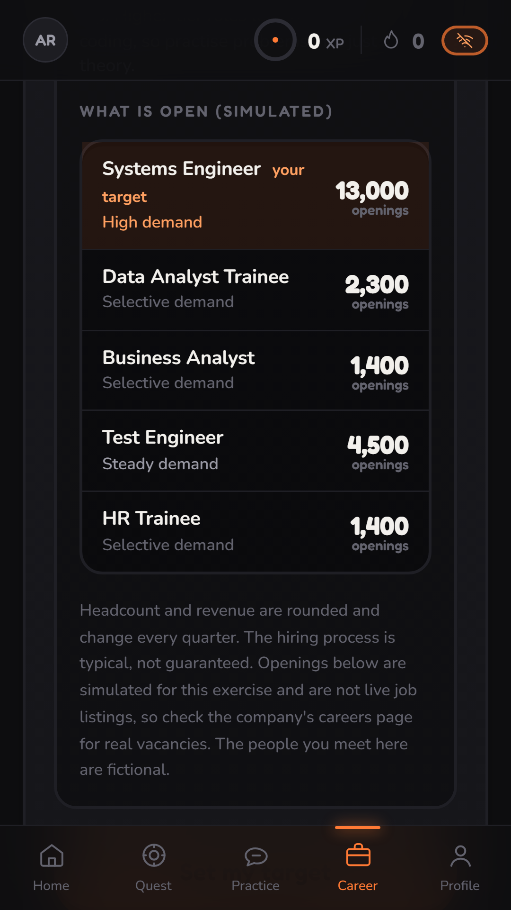
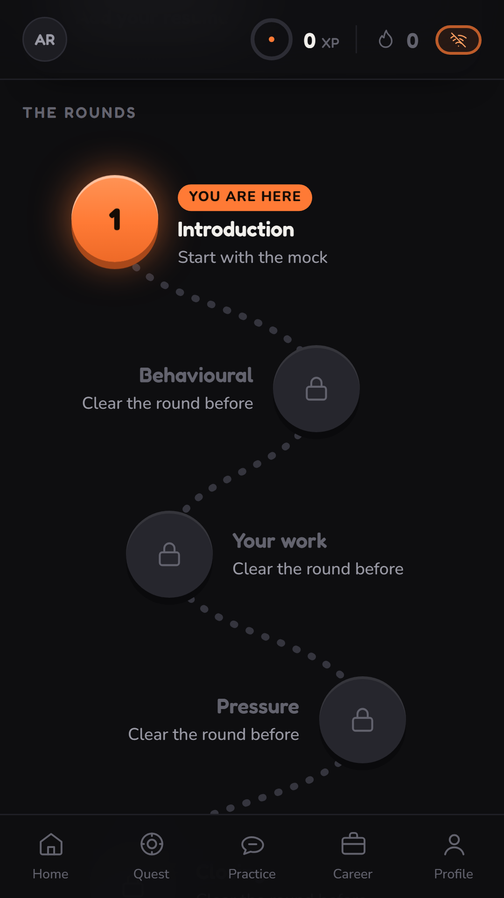
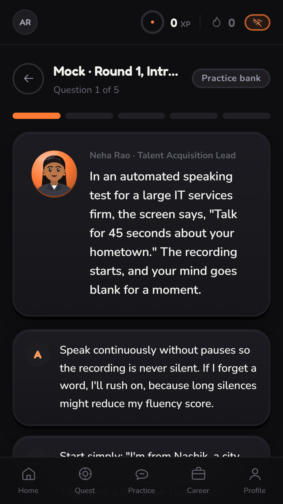
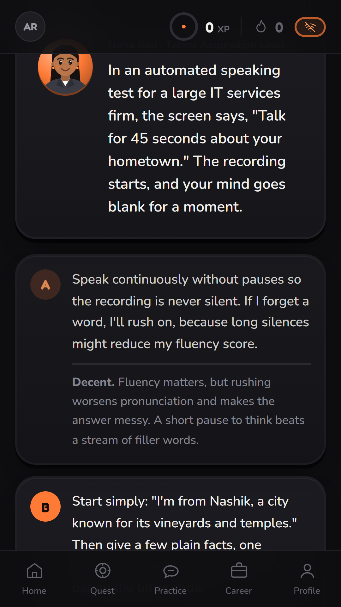
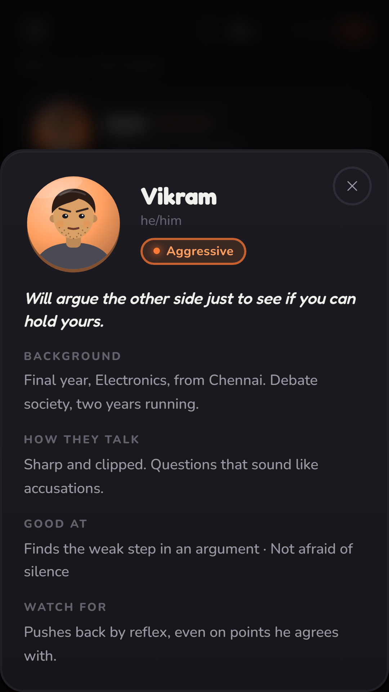
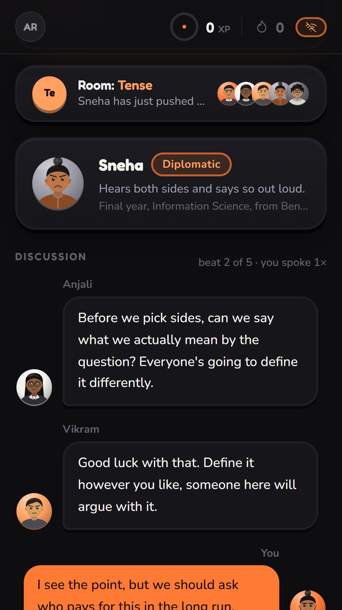
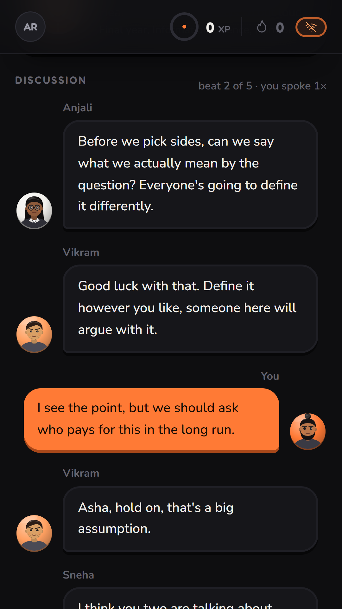
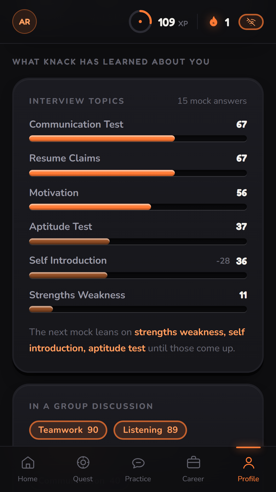

Abstract—Students preparing for campus placements mostly rehearse alone. They read question lists, watch videos or ask a general chatbot, and they have almost no way to practise a group discussion or to see how a particular company hires. This paper presents Knack, a web-based career simulation that takes an engineering student through a group discussion, five interview rounds, joining, an internship, a job offer and full-time work. The implemented system adds a multiple-choice mock interview that must be finished before each real round; profiled group-discussion panellists who speak one at a time beside a live reading of the room’s mood; sixteen company profiles (thirteen real, three invented) with hiring steps and clearly labelled simulated openings; voice dictation; and a personalisation layer that keeps rolling per-topic statistics and uses them to choose questions and to set how hard the panel pushes. Every feature has a local fallback, so the system runs with no network and no AI model.
The design is verified with an end-to-end test suite (37 of 37 checks passed in offline mode) and the server’s median response time is about one millisecond on a laptop. The question-selection policy is compared with two baselines on 2000 simulated learners, where it cuts the share of questions wasted on items already answered strongly by 41% against a no-repeat baseline (and by more than half against random draws) but gives no measurable gain in simulated learning over that baseline. A pilot study with students is planned and its result tables are left open.
Index Terms—Career simulation, placement preparation, mock interview, group discussion, personalisation, spaced practice, offline-first, serious games, speech input.
Campus recruitment in engineering colleges is decided in a few conversations: an aptitude test, a group discussion, and one or more interviews. A student gets very few chances to practise them under realistic conditions. A group discussion needs five or six other people who are willing to behave like candidates, and an interview needs someone who has read the student’s resume. Printed question lists and recorded videos are plentiful, but they cannot answer back, and they say nothing about how a particular employer hires [1], [2].
Large language models can write fresh questions and play a conversation partner [12], which makes them an obvious tool for this. Used naively, though, they have three weaknesses for a student. Their output often reads as generic and formulaic. They need a connection and a quota, which a hostel network or a free-tier account may not give. And they know nothing about the student between one session and the next, so every session starts from zero.
This paper describes Knack, a career simulation that treats those three weaknesses as design requirements. The student progresses through a group discussion, five interview rounds, joining a company, an internship, an offer and full-time work, and each stage is gated on performance and not on points. The main contributions are:
Placement preparation tools tend to be either static banks that never adapt or chat interfaces that adapt to nothing. Neither lets a student practise a group discussion alone, learn how a named company hires, or carry what was learned in one session into the next, and both usually need a network. A tool is needed that rehearses the whole path from the first discussion to the first review, remembers the student, and still works when the connection or the model does not.
Work relevant to Knack falls into five areas: interview-training systems, serious games and gamification, spaced and retrieval practice, learner modelling, and software that works without the cloud.
Hoque et al. built a virtual interviewer that follows the trainee’s speech and facial behaviour and gives feedback afterwards [1]. Anderson et al. describe a framework in which virtual agents coach social skills for job interviews through scenarios [2]. Maurer et al. relate coaching to performance in situational employment interviews [3], which supports the premise that rehearsal helps. These systems centre on the interview as a single conversation with one interviewer. A group discussion, the workplace after the offer, and the specific employer are outside their scope.
Reviews of computer games and serious games report positive effects on knowledge and engagement but note uneven evidence [4]. Studies of gamification find mostly positive results that depend on context and on the user [5], and a meta-analysis finds small to moderate positive effects on cognitive, motivational and behavioural outcomes [6]. Deterding et al. define gamification as the use of game design elements outside games [14]. Knack uses such elements, namely stars, a level map and streaks, but gates progress on scored performance so that points cannot substitute for skill.
Distributed practice improves retention compared with massed practice [7], and taking a test is itself a learning event [8]. Settles and Meeder model the half-life of a memory to schedule reviews at scale [10]. The mock interview in Knack is a retrieval task with immediate explanation, and its selection weights bring back items that were answered poorly after a delay.
Knowledge tracing estimates mastery of a skill from the sequence of right and wrong answers [9], and Bloom’s account of one-to-one tutoring argues for adapting instruction to the individual [15]. Knack uses a far simpler estimate, a rolling mean of recent observations, because the estimate has to be shown to the student and argued with.
Few-shot language models make question writing cheap [12], but they depend on a service. The local-first view holds that software should keep working, and keep the user’s data on the user’s device, without the network [11]. Knack follows this for everything except optional generation, and it reports each time that a result was scripted.
Knack combines these strands in one system. It covers the whole path from group discussion to review, it ties the practice to a named employer, it keeps a student model that is arithmetic and visible, and it treats the absence of a model as a normal operating mode.
| Ref. | Year | Focus / technology | Contribution | Gap addressed by this work |
|---|---|---|---|---|
| Hoque et al. [1] | 2013 | Virtual interview coach | Automated feedback on speech and facial behaviour | One interviewer, camera and audio sensing; this work adds company context, groups and a no-sensor mode |
| Anderson et al. [2] | 2013 | Virtual agents, social coaching | Scenario-based coaching for job interviews | Interview only; this work adds group discussion and workplace phases |
| Maurer et al. [3] | 1998 | Coaching, situational interviews | Relates coaching to interview performance | Coaching by people; this work is self-paced |
| Connolly et al. [4] | 2012 | Serious games review | Synthesises evidence on games for learning | General; this work targets one domain and gates on competency |
| Hamari et al. [5] | 2014 | Gamification review | Mostly positive, context dependent | Engagement alone; this work ties it to scored performance |
| Sailer & Homner [6] | 2020 | Gamification meta-analysis | Small to moderate positive effects | Effects vary by design; this work reports its mechanics |
| Cepeda et al. [7] | 2006 | Distributed practice | Quantitative synthesis of the spacing effect | Verbal recall; this work spaces judgement items |
| Roediger & Karpicke [8] | 2006 | Test-enhanced learning | Testing improves long-term retention | Memory materials; this work uses scored scenarios |
| Corbett & Anderson [9] | 1994 | Knowledge tracing | Estimates mastery from answer sequences | Needs a skill model; this work uses a readable rolling mean |
| Settles & Meeder [10] | 2016 | Spaced-repetition model | Predicts recall to schedule reviews | Needs large usage data; this work needs none and runs offline |
Table I lists ten studies, their focus, what they contribute, and the gap each leaves that this work addresses. The studies agree that rehearsal, feedback and spaced retrieval help, but each addresses one slice of the placement problem.
Interview systems. The systems in [1], [2] show that a virtual interviewer is accepted and useful, and [3] supports the value of coaching. They concentrate on the interview itself. The group discussion, which many recruiters use as a filter, and the knowledge of a specific employer, are not their focus.
Engagement. The reviews [4]–[6] suggest that game elements can help, with effects that depend on how they are used. A system that rewards attendance can reward the wrong thing, so the gating rule matters more than the decoration.
Practice scheduling. The spacing and testing results [7], [8] and the scheduling model [10] justify bringing back missed items. Most work assumes a fixed vocabulary of facts, whereas interview judgement items are few and carry explanations, which changes how often repetition is useful.
Student models. Knowledge tracing [9] and its successors are principled but opaque to the learner. For a training tool that wants the student to trust and contest what it says, a visible rolling mean is a defensible trade of accuracy for legibility.
The review leaves the following gaps open.
| Gap | Response in Knack |
|---|---|
| Fragmented practice | Six phases in one gated simulation |
| Generic employers | Sixteen company profiles with hiring steps and openings |
| Assessment before teaching | Mock first, with every option explained; real round locked until done |
| Opaque personalisation | Rolling statistics shown on the Profile page |
| Network dependence | Offline switch; banks, scripts and a local rubric |
| Generic generated text | Voice brief in prompts and a post-filter |
Table II pairs each gap with the design response. In short, none of the reviewed work combines a group discussion with profiled panellists, employer-specific preparation, a mock-before-assessment rule and an offline mode, and Knack is built to fill that space.
The system has four layers: a browser client, an Express server with its routes, a set of engines holding the domain logic, and a SQLite store (Fig. 1). An optional AI layer sits beside the engines. A single switch, described in Section IV-G, decides whether it is ever asked. All trainee data stay in the local database.
The simulation runs through six phases (Fig. 2). A group discussion clears at 6/10, each interview round clears at 6/10 and unlocks the next, an internship level advances at 5/10, and a promotion needs a Leadership attribute and not attendance. Ten professional attributes, scored 0–100, run under all of it and can go down as well as up. Experience points exist, but they never open a phase.
A mock is five multiple-choice questions taken before a real round. Each question puts the trainee in a short situation and offers four responses, which score 9, 6, 3 or 1 and are labelled Strong, Decent, Weak and Costly. The options are shuffled on every run so that a retake cannot be passed by remembering “it was C”. The scores and the reasons are held on the server and released one question at a time, only after the trainee has answered, because sending the score sheet to the person being scored would defeat the exercise. Answers are idempotent, so repeating a request returns the first answer, and experience points are paid only for the first mock of a round. The real round returns an error (HTTP 409) until its mock is complete.
The bank holds 84 hand-written items on 49 topics. Each round has twelve generic items and one or two for each of four kinds of employer (service, product, big-tech, start-up), so that at least one question fits the company the trainee chose. When a model is reachable, some items are written fresh for the trainee and the rest come from the bank.
The catalogue holds sixteen employers. Thirteen are real and carry an approximate headcount and turnover tagged by year; three are invented. A profile gives a description, the culture, the usual hiring steps, what is tested and tips. For openings, the number for a role is the product of headcount, an annual intake rate for the company type, and the role’s share of intake, rounded to two significant figures:
where N is headcount, λt is the intake rate for company type t (7% for services, 6% for product, 2.5% for big-tech, 20% for start-ups) and st,r is the share of role r. The intake rates and shares are modelling assumptions, not published data, which is why the interface labels every openings figure as simulated and says that real vacancies are on the company’s own careers page.
Panel. Five panellists are fixed (Dominant, Knowledgeable, Aggressive, Diplomatic, Quiet). Each has a background, strengths, a characteristic tell and a manner of speaking that the trainee can open and read, and each is drawn by a parametric avatar. Fixing the panel means a trainee who runs five discussions learns the same five people and starts to predict them. The panellists speak one at a time, and the trainee may speak to the room or to one person, or stay quiet. Staying quiet is scored like any other choice, and never speaking caps every dimension at 25.
Pressure. The panel’s pressure is set from the trainee’s confidence c and communication m attributes:
A room that is too hard for someone whose confidence is low teaches them to stay silent, which is the opposite of the aim, so the pressure is lowered for them and raised for those who are holding their own.
Mood. The room’s mood is computed from the last six lines of the transcript and not asked of a model, so it exists when the panel is scripted. Let nc, nw, nb be the numbers of lines that match pushback, agreement and bridging patterns, nq the number of question marks, k the number of lines in the window and ℓ the mean words per line. Three scores are clamped to 0–100:
The scores are loosely modelled on the circumplex of affect [13]: energy stands for arousal, and tension and warmth split the valence axis into disagreement and cohesion. They are heuristics and not a validated instrument. Table III gives the labels, applied in the order shown. A note under the label says who is clashing. It says that people have turned towards the trainee only when a panellist has said the trainee’s name, because an earlier version treated a generic “you” as an address and reported attention that was not there.
| Output | Condition | Effect |
|---|---|---|
| Heated | T ≥ 66 | Names the two clashing speakers |
| Tense | T ≥ 45 and E ≥ 55 | Notes an unsettled pushback |
| Warm | W ≥ 62 | People building on each other |
| Lively / Flat | E ≥ 62 / E < 38 | Pace of the room |
| Calm | none of the above | Default |
| Gentle / Steady / Tough | ν < 42 / otherwise / ν > 66 | Prompt and script intensity |
Every mock answer, discussion dimension and interview round writes one observation x ∈ [0, 100] against a named key. A mock score s ∈ {9, 6, 3, 1} is mapped to x = round(100s/9). The value shown for a key is the mean of its last five observations, and its trend is the difference between the later and the earlier half of that window once four are held:
Selection of the next question draws without replacement with weight
where a topic is weak when its value v is below 60, and for a question seen before, δ adds 1.5 if it was last answered weakly (score ≤ 3) more than half a day ago, adds 0.3 if weakly but more recently, subtracts 0.8 if it was last answered Strong, and subtracts 0.6 if it was seen in the last six hours. The final draw is random so that two trainees with the same history do not get the same five questions. A suggestion of what to do next (a mock, a weak topic, or the lowest discussion dimension) is read from the same rows. Everything is arithmetic on stored rows, so it works with no model, and the Profile page shows it in full.
Offline mode is on if the environment variable KNACK_OFFLINE is set, in which case it cannot be switched off from the app, or if a stored setting says so. When it is on, the model client throws immediately and each caller falls back to its local source: the question bank for mocks, a scripted panel for discussions, and a deterministic rubric for scoring. Fonts are bundled so that nothing is fetched from the network (Fig. 3). Anything that did not come from a model is tagged, and the interface says so, for example “Scripted panel”.
Generated text tends to be recognisable by its stock phrasing. Every person-facing prompt carries a short voice brief, and every string that comes back, whether generated or scripted, passes through a post-filter. The filter removes markdown and list markers, drops praise openers (“Great question!”), swaps stock connectives (“Furthermore” becomes “Also,”; “utilize” becomes “use”), and rewrites dashes (a trailing dash becomes an ellipsis, a numeric range keeps a hyphen, any other dash becomes a comma). It is a rule-based filter. It does not claim to defeat detectors and is not built to.
The system is a single-page client and a local server (Table IV). The server listens on the loopback address only, hashes passwords with scrypt and stores only the SHA-256 hash of each session token.
| Function | Component |
|---|---|
| Client | React 19, Vite 7, Tailwind CSS v4, Framer Motion, React Router, Zustand |
| Server | Node 24, Express 5 |
| Storage | SQLite through better-sqlite3 (20 relations) |
| Optional generation | OpenRouter free-tier model chain under a time budget [17] |
| Speech input | Browser Web Speech API [16], on-device where available |
| Characters | One parametric SVG component |
| Fonts | Fredoka and Nunito, bundled |
The interface keeps a black background and a single orange accent, and takes its game feel from shape: buttons with a thick lower edge, star ratings and a winding level map for the five interview rounds. Colour does not carry meaning, since the label and an icon do, and the brightness of the orange marks emphasis. People are drawn by a single parametric SVG component whose look is a specification (skin, hair, brows, eyes, accessory, top and colour) with five expressions and a speaking animation. The specification never encodes gender, and pronouns are stored as separate data. A mic button sits wherever an answer is typed and fills the text box through the Web Speech API. Recognition is done by the browser, and most browsers send the audio to their maker’s servers, so in offline mode the button requests on-device recognition and says so when the browser cannot provide it. Typing always works. Fig. 4 shows eight of its screens.

(a) Company profile
(b) Level map
(c) Mock question
(d) Every option explained
(e) Panellist profile
(f) Room mood
(g) Discussion
(h) Training profileThe content shipped with the system is summarised in Table V. The mock bank, the panel script and the company catalogue are written by hand, which is what lets the offline mode be a full mode and not a degraded one.
| Item | Count |
|---|---|
| Mock-interview items (12 generic per round, plus employer-style items) | 84 |
| Topics covered by the mock items | 49 |
| Companies (13 real, 3 invented) | 16 |
| Group-discussion panellists, fixed | 5 |
| Interview rounds (3 questions each) | 5 |
| Professional attributes | 10 |
| Badges, each condition-checked | 24 |
| Database relations | 20 |
With all modules integrated, a trainee chooses a company and reads its profile (Fig. 4a), sees the level map for the interview rounds (Fig. 4b), takes a mock (Fig. 4c) in which every option is explained after the pick (Fig. 4d), opens a panellist’s profile (Fig. 4e), and runs a group discussion in which, on a phone, the room’s mood sits above the conversation (Figs. 4f and 4g); on a wide screen it sits beside the table. The Profile page shows what the system has learned (Fig. 4h). All eight screens were captured from the running application by a script released with the code.
An end-to-end script (smoke.mjs) signs up a throwaway account against a server started with KNACK_OFFLINE=1 and walks the new flows. In the final run all 37 checks passed (Table VI). Among them are checks that the answer key is not in the question payload, that a real round is refused before its mock and opens after, that re-answering returns the first answer, that the openings carry the word “simulated”, that panel text contains no dashes, and that an offline setting made by the environment cannot be undone from the app.
| Area | Checks |
|---|---|
| Account and onboarding | 2 |
| Settings and offline lock | 2 |
| Company profiles and choice | 6 |
| Group discussion: profiles, mood, pressure, turns, finish | 12 |
| Mock interview: key hidden, idempotent, gate, XP | 13 |
| Training profile in the user payload | 2 |
| Total | 37 |
The selection rule of Eq. (7) is compared with two baselines on simulated learners. This is a simulation and not a user study, and its learner model is an assumption. Each of 2000 learners has a latent ability for each topic, the mean of two uniform draws. An item starts with probability of a Strong answer equal to its topic’s ability. A Strong answer scores 9, otherwise 6, 3 or 1 with weights 0.45, 0.35 and 0.20. Seeing an item with its explanation raises its probability by a fraction L of the remaining gap, with L = 0.35. Each learner takes four mocks of each of the five rounds, one day apart. The Random baseline draws five of the twelve items uniformly. The Unseen-first baseline never repeats an item until all twelve have been served. The Knack policy is the real selection code running on a throwaway database with the clock advanced. All runs are seeded and the script is released with the code.
Table VII reports, as means with 95% confidence half-widths: coverage of the twelve items after two and three mocks, the share of questions served in mocks 2–4 that the learner had last answered Strong (“wasted”), the share that it had last missed (“revisited”), the mean item score in the fourth mock, and the mean probability of a Strong answer over the whole pool after the fourth mock.
| Policy | Coverage @2 | Coverage @3 | Wasted | Revisited | Mock 4 (of 9) | Pool P(Strong) |
|---|---|---|---|---|---|---|
| Random | 0.660 ±0.001 | 0.801 ±0.002 | 0.348 ±0.002 | 0.152 ±0.002 | 7.44 ±0.02 | 0.735 ±0.001 |
| Unseen-first | 0.833 ±0.000 | 1.000 ±0.000 | 0.267 ±0.002 | 0.145 ±0.002 | 7.37 ±0.02 | 0.751 ±0.001 |
| Knack (Eq. 7) | 0.736 ±0.001 | 0.928 ±0.001 | 0.158 ±0.002 | 0.233 ±0.002 | 7.31 ±0.02 | 0.752 ±0.001 |
The result is mixed, and it is worth stating plainly. The Knack policy does what it is built to do on the two measures that concern wasted effort: compared with Unseen-first it re-serves previously Strong items 41% less often (0.158 against 0.267) and revisits previously missed items 61% more often (0.233 against 0.145). It pays for this in coverage, which reaches 0.928 after three mocks against 1.000. On the measure of simulated learning, the pool-level probability of a Strong answer, Knack (0.752) and Unseen-first (0.751) are indistinguishable, and both are above Random (0.735). Knack’s mean score in the fourth mock is slightly lower (7.31 against 7.37) because it serves harder items, as it should. The honest conclusion is that under this learner model the weighting buys focus and not faster learning than a simple no-repeat cycle. Whether the focus helps real students is for the pilot study to show, and the same scripts can be rerun with other learner models.
Two components are checked on constructed inputs, which shows direction and not accuracy. The mood reader was given four short transcripts written to be heated, warm, flat and empty, and gave the labels in Table VIII. Four generated-style strings were passed through the post-filter, with results in Table IX. One of them shows a limit: a stock connective in the middle of a sentence (“has additionally transformed”) is not rewritten, since only sentence-initial connectives are.
| Input | Label | T | W | E |
|---|---|---|---|---|
| Two speakers clashing | Heated | 78 | 13 | 66 |
| Agreement and bridging | Warm | 0 | 100 | 60 |
| Two short lines | Flat | 15 | 35 | 31 |
| Empty transcript | Flat | 15 | 35 | 13 |
| Before | After |
|---|---|
| Great question! Furthermore, it is important to note that we should utilize a **balanced** approach — one that serves everyone. | Also, we should use a balanced approach, one that serves everyone. |
| Absolutely! Moreover, remote work — in 2020–2024 — has additionally transformed hiring. | Also, remote work, in 2020-2024, has additionally transformed hiring. |
| - First, define the term. - Second, give two examples. | First, define the term. Second, give two examples. |
| Certainly! That is a valid point. Additionally, we can leverage existing infrastructure — | That is a valid point. Also, we can use existing infrastructure... |
Table X gives server response times for one trainee on a laptop, measured from a client on the same machine with the server in offline mode, so that the figures show the application’s own work and no model latency. Each endpoint was called 200 times in sequence with no request failing. This is not a load test.
| Endpoint | p50 | p95 | Max |
|---|---|---|---|
| GET user (profile, training) | 1.0 | 1.7 | 2.4 |
| GET career (company list) | 0.8 | 1.3 | 2.4 |
| GET company profile | 0.6 | 1.0 | 2.6 |
| POST mock start | 0.7 | 1.3 | 1.8 |
| POST mock answer | 0.8 | 1.3 | 6.1 |
| POST gd start (panel, mood) | 0.8 | 1.2 | 1.9 |
| POST gd turn (scripted) | 0.6 | 1.1 | 1.5 |
Response times are about a millisecond because the offline paths are lookups and arithmetic over a local file. When a model is online, the dominant cost is the model, bounded by the time budget, and a failure drops to the same local path. An earlier measurement with a built-in fetch client showed a flat 15 ms on every endpoint. That was an artefact of the client on this machine and not of the server, since a raw HTTP client with keep-alive measured under a millisecond on the same server, and that client was used for Table X.
The simulation above cannot say whether students improve. A pilot study is planned in which each participant uses the system over a fixed period and is assessed before and after on a group discussion and an interview by raters who do not know the condition, and rates usability. Table XI holds the slots for the results and is deliberately empty.
| Measure | Before | After |
|---|---|---|
| Participants (N) | – | – |
| Group-discussion rating (rater mean) | – | – |
| Interview rating (rater mean) | – | – |
| Mock score, first and last attempt | – | – |
| Usability score | – | – |
| Share who would use it again | – | – |
Table XII records the main problems met during development and the corrective steps adopted.
| Challenge | Remedy |
|---|---|
| Free-tier model quota and outages | Offline switch; local bank, script and rubric for every call |
| Generic, formulaic generated text | Voice brief in prompts; rule-based post-filter |
| Answer key exposed to the client | Scores and reasons kept on the server and released per answer |
| Mood note claimed attention that was not there | Only a spoken name counts as addressing the trainee |
| Speech recognition needs the network, and one browser lacks it | On-device request when offline; typing always available |
| Web fonts need the network | Fonts bundled with the client |
| Company figures change | Rounded, tagged by year; openings labelled simulated |
| Model fixates on profile details | Only bounded skill lists reach scenario prompts |
The company figures are rounded values entered by hand from public disclosures and should be checked against the companies’ own reports before they are quoted. The intake rates and role shares behind the openings are assumptions. The mock bank has 84 items, so a trainee who retakes a round many times will see repeats. The selection simulation uses an assumed learner model. The mood reader is a set of regular expressions and will misread irony. The post-filter is cosmetic. No study with students has yet been run, and until one is, the claim of the paper is that the system works as designed and does so offline, not that it improves placement outcomes.
This paper presented Knack, a career simulation for placement preparation in which a mock interview comes before every real round, a profiled group-discussion panel speaks beside a reading of the room’s mood, sixteen company profiles tie practice to an employer, and a visible personalisation layer shapes the questions and the pressure. The system runs with no network and no model, and it says which parts were scripted. It passed 37 end-to-end checks in offline mode and responds in about a millisecond. In simulation, its selection rule cuts wasted repeats and brings back missed items but does not outperform a simple no-repeat cycle on simulated learning, which is reported as found.
Planned work is the pilot study of Section VI-F, a larger mock bank and company catalogue, spoken replies from the interviewer and the panel (dictation exists, speech output does not), richer learner models behind the same selection interface, and the running of several companies at once.